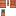
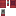
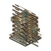
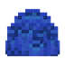
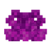
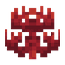
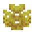

#brittle
create:brittle
标签成员110

铜阀门手轮
青色阀门手轮
缠魂钟钟可可果花盆覆地苔藓竹笋大型垂滴叶藤蔓缠怨藤植株缠怨藤垂泪藤植株垂泪藤蛋糕失活的管珊瑚失活的脑纹珊瑚失活的气泡珊瑚失活的火珊瑚失活的鹿角珊瑚
管珊瑚
气泡珊瑚
火珊瑚
鹿角珊瑚失活的管珊瑚扇失活的脑纹珊瑚扇失活的气泡珊瑚扇失活的火珊瑚扇失活的鹿角珊瑚扇管珊瑚扇脑纹珊瑚扇气泡珊瑚扇火珊瑚扇鹿角珊瑚扇墙上的失活管珊瑚扇墙上的失活脑纹珊瑚扇墙上的失活气泡珊瑚扇墙上的失活火珊瑚扇墙上的失活鹿角珊瑚扇墙上的管珊瑚扇墙上的脑纹珊瑚扇墙上的气泡珊瑚扇…还有 46 个用到它的 Create 配方
本站收录的 Create 配方里没有用到它。